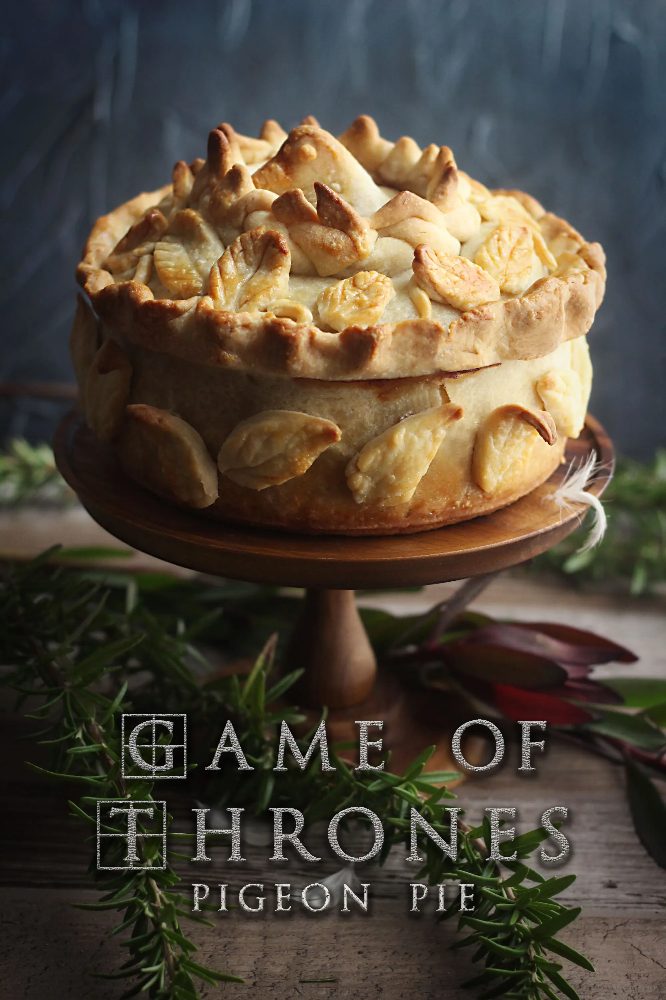

Pigeon Pie

Pigeon Pie from Game of Thrones. Does not contain actual pigeon.
Ingredients
Filling
- 2 tbsp - unsalted butter
- 1 tbsp - vegetable oil
- 1 - medium onion thinly sliced
- 1 tsp - sugar
- 1/4 cup - red wine
- 2 tbsp - vegetable oil
- 1 - medium carrot peeled, small diced
- 1 - small onion small diced
- 1 - medium stalk of celery small diced
- 1 - bay leaf
- 1/2 tsp - cinnamon
- 1/4 tsp - ground cloves
- 14 oz - ground pork
- salt and pepper to taste
- 14 oz - quail meat bones removed (you can substitute chicken)
- 1/2 cup / 3oz - dried apricots small diced
- 1/3 cup - pine nuts lightly toasted
- 12 slices - pancetta
Hot Water Crust
- 20 oz - all purpose flour
- 1 1/2 sticks / 6oz- unsalted butter
- 7.5 oz - water
- 1 - egg lightly beaten (egg wash)
Steps
- Heat a saucepan over medium heat with butter and oil. Once hot, add the onions and cook for 5 minutes. Add the sugar and mix to combine. When the onions get soft, add the wine and cook over medium low heat until most of the liquid has cooked off and the onions are really nice and soft. Season for salt and pepper, set aside.
- Heat a clean saucepan over medium heat. Add the vegetable oil and once hot, add the onions and bay leaf and cook for 3 minutes until softened. Add the diced carrots, and celery and cook for another 3 minutes. Add the ground pork, cinnamon, and cloves. Break the pork into small pieces and cook just enough for the pork to cook through. Season with salt and pepper. Set aside to cool.
- Preheat the oven to 375F. Have an 8" spring form pan ready for the crust.
- For the crust, heat the water and butter together just until it comes to a boil. Pour the water and butter mixture into the flour and mix just until it forms a ball of dough. Take 1/3 of the dough and place it on a lightly floured surface. Leave the rest of the dough in a warm place, covered.
- Roll the dough out into a circle. It needs to be big enough to fit the bottom and sides of the pan. Transfer the rolled out dough to the pan and gently press it into the corners of the pan.
- To start filling the pie, start with three slices pancetta followed by half of the pork, half of the onions, half of the apricots, half of the pine nuts, and then another 3 slices of pancetta.
- Lightly season the quail or chicken with salt and pepper and fill the pie with the meat. Top another 3 slices of pancetta and the rest of the onions, apricots, and pine nuts. Pour in the last of the pork and finish with 3 more slices of pancetta on top. Set aside.
- Take half of the remaining dough and roll it out to fit the top of the pie. Press the dough together to seal the seams. At this point, you can decorate the top of the pie with leaves, a crown, and a pigeon in the middle. Stick the add ons with a little bit of the egg wash. Cut 2-4 slices in the center (inside the crown) to allow ventilation. Egg wash the crust.
- Bake for one hour. At this point, the crust should be lightly golden brown but if you notice your bird or edges are getting dark too quickly, cover it with foil. If you want to add any additional leaves to the side of the pie, I took the pie out when the top was lightly golden brown. Take off the ring of the springform pan and add any additional leaves. Pan for another 30-40 minutes until the internal temperature reaches 160F. Let it cool before slicing and eating.